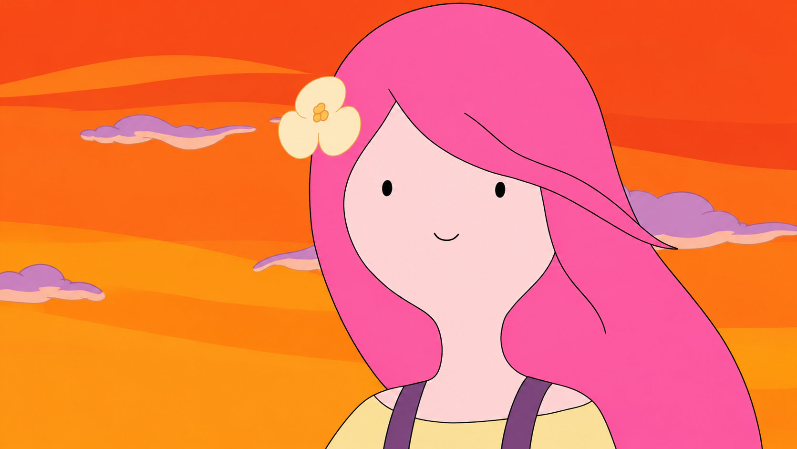

Sobre Dulce Princesa
Dulce Princesa (cuyo nombre real es Bonnibel Chicle) es la gobernante científica y protectora del Dulce Reino en la Tierra de Ooo. Formada a partir de una masa de chicle inteligente, combina una imagen amable y dulce con una mente brillante, pragmática y a veces controladora, dedicada a mantener a salvo a su gente y a investigar desde la genética y la robótica hasta los misterios más profundos de Ooo. Aunque al principio suele mostrar una postura formal y distante, a lo largo de la serie se revela su lado más humano y vulnerable, marcado por la responsabilidad del trono, su amistad y vínculo con Finn y Marceline, y su voluntad de hacer lo que considera necesario para proteger su reino.